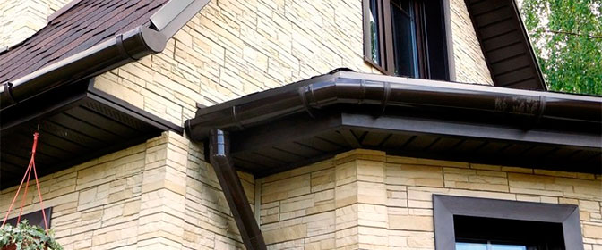

Для того чтобы организовать отвод воды с крыши используют различные водосточные системы. Такая система - важный элемент практически любой кровли. Представляет собой она систему элементов, которые защищают цоколь и наружные стены строения от переизбытка влаги, чрезмерного увлажнения: водосточные трубы, доборные элементы, крепления желобов и труб, водосточные желоба.
При использовании организованного водостока вода с крыши собирается, после его направляется в одно место. Вследствие этого строение защищено от воздействия влаги, а, следовательно, ему не угрожает разрушение. Помимо функционального назначения, водосточные системы могут выполнять и декоративные функции. Так, современные декоративные водостоки стильно и красиво подчеркивают переходы от фронтона к фасаду, а также от крыши строения к его стенам.
Водосточные системы являются системами организованного водостока. Нередко в домах нет такого водостока, а используется т. н. неорганизованный водосток, т. е. вода со скатной крыши просто стекает на поверхность земли. Если строение имеет односкатную крышу, а площадь здания при этом невелика, тогда неорганизованный водосток допустим. Но в этом случае вода не должна попадать на пешеходные дорожки или тротуары. Недостатком использования такого типа водоотвода является преждевременное разрушение и износ цокольного этажа, стен строения и других конструктивных элементов. Это происходит вследствие высокой и постоянно действующей гидростатической нагрузки.
Организованный наружный водоотвод все-таки более эффективный и практичный способ организации стока воды с крыши. При использовании водосточной системы вода стекает по специально установленным желобам, после чего подводится к наружным водосточным трубам
Использовать и устанавливать современный системы водостока несложно, так как в их состав входят все требуемые элементы, включая и крепеж. Трубы и желоба могут иметь различную форму – и прямоугольную, и круглую. Выбор формы желобов зависит, в основном, от внешнего соответствия элементов системы и архитектуры и дизайна строения.
Помимо внешнего вида, трубы и желоба водосточных систем отличаются размерами. Как правило, размеры всех элементов системы рассчитываются с учетом нормативных требований. При необходимости можно комбинировать различные размеры элементов, выбирая оптимальные элементы и их размеры для каждого случая. Также при этом учитывают такие факторы, как расположение и число точек стока осадков, площадь крыши и ее уклон.
Допустимо устройство водостока с использованием элементов различных производителей, так как они совместимы по размерам и по строению. Материал, из которого производят водосточные системы, на выбор системы практически не оказывает внимания. В зависимости от материала, тем не менее, различают несколько видов систем водостока.
Виды водосточных систем
В зависимости от материала, используемого для изготовления водосточных систем, они могут быть двух видов - металлические системы или водостоки, изготовленные из ПВХ (или пластика).
Часто применяют в последнее время системы водостока, изготовленные из ПВХ. Такие водостоки имеют достаточно преимуществ, благодаря чему и используются все чаще и чаще. Так, водосток из ПВХ устойчив к химическим и коррозионным воздействиям, к неблагоприятным воздействиям природного характера. Также пластиковые водостоки просто монтируются и не подвержены воздействию ультрафиолета. Другими преимуществами ПВХ - водостоков являются их небольшой вес и долговечность, а также большой выбор цветовых решений и устойчивость к воздействию высоких или низких температур и резкому изменению температуры.
Монтаж таких водостоков прост и быстр, так как элементы системы имеют небольшой вес. Кроме того, сама схема монтажа отличается простотой и доступностью к исполнению начинающими мастерами.
Удобно и то, что пластиковые водостоки не требуют повседневного ухода, а их обслуживание сводится к простому осмотру системы и удаления мусора или листьев, попавших внутрь элементов системы.
В отличие от пластиковых труб и желобов, металлические водосточные системы отличаются разнообразием оттенков. Металл водостока покрывают несколькими видами покрытий, каждое из которых отличается своими свойствами и толщиной. Так, покрытие может быть из пурала, поливинилхлорида или полиэстера. Наиболее толстым и, соответственно, прочным покрытием металлических водостоков является поливинилхлорид, а полиэстер имеет наименьшую стоимость.
Комплектация металлических водосточных систем включает тот же комплект элементов, что и пластиковые системы. Устанавливаться такие системы могут, как и ПВХ-водостоки, на скатную кровлю любого вида. Также водосточные системы могут быть изготовлены из меди. Такие системы считаются наиболее долговечными.
Крепление водостока
Правильное крепление водостоков заключается в последовательном выполнении основных этапов процесса, и не является сложным для самостоятельного исполнения. Начинается работа с крепления горизонтальных элементов водосточной системы - желоба, подвесные сливы. Далее крепят вертикальные детали, т. е. трубы (в направлении снизу вверх).
Для монтажа желобов и сливов сначала измеряют периметр крыши, чтобы произвести расчета для получения общей длины желобов. После этого следует определить требуемое для монтажа количество крепежных деталей. Как правило, для закрепления желобов из листового металла рекомендуется располагать крепежные крюки на расстоянии от 60 до 90 см. При использовании желобов. Изготовленных из асбестоцемента, крюки рекомендуется располагать на несколько большем расстоянии - до 90 сантиметров.
Далее необходимо определить и отметить места, где будут располагаться водоприемные воронки, т. е. стоки. При этом водное отверстие стока располагают на 1 сантиметр ниже капельника карнизного свеса. В некоторых системах водостока сливом является соответствующее звено желоба, а не слив. В этом случае следует располагать штырь карниза так, чтобы он был на пять сантиметров ниже свеса кровли.
Подвесные желоба крепятся скобами. При этом необходимо получить уклон для нормального стока воды по желобам, монтируя их на разном уровне. После этого необходимо натянуть между штырем и скобой веревку, по которой прикрепить к карнизу промежуточные скобы. Настенные желоба крепятся с помощью крюков, установленных на поверхность карнизного свеса в перпендикулярном к нему направлении.
После подготовки настенных и подвесных желобов, т. е. определении их требуемой длины, звенья соединяют в единый блок, для чего в случае стальных желобов применяются фальцы двойные лежачие. При необходимости прикрепить к уже эксплуатируемой системе новый желоб необходимо использовать специальные адаптеры-переходники. И в завершении первого этапа работ к сливу крепится переходное колено.
На втором этапе монтажа водосточной системы следует навесить водосточные трубы. Это можно также сделать одновременно со строительством кирпичной стены, а можно и после того, как строительные работы завершены. Навеска труб на этапе проведения строительных работ считается более экономичным вариантом.
Сточная труба монтируется снизу вверх. Ее звенья закрепляются и прочно фиксируются в настенных штырях. Для определения места крепления самого верхнего штыря следует учитывать угол перехода колена, диаметр сточной трубы и размеры выносного карниза. В нижнем настенном штыре следует прикрепить стандартный отмет. Такой отмет имеет срезанный угол или может быть изготовлен из звена водосточной трубы. В настенные штыри следует закрепить звенья трубы так, чтобы каждое звено опиралось на отдельный штырь. Если звено имеет длину более двух метров. В таком случае специалисты советуют дополнительно установить поддерживающий штырь. Располагать его следует в середине звена. Он снизит нагрузку на ствол трубы. На этом крепление водостока завершается.
Особенности пластиковых водостоков Döcke
В последнее время все чаще используют водостоки пластиковые Döcke, элементы которых в ходе эксплуатации способны выдерживать достаточно большую нагрузку от снега, воды или льда, и имеют гарантийный талон, подтверждающий их надежную эксплуатацию в течение 25 лет. Такие водосточные системы распространены вследствие их преимущественных особенностей. Так, они не требуют специального ухода. Просты в монтаже, долговечны, стойки к выцветанию и сохраняют в течение многих лет и эстетичность, и надежность, и прочность.
Важным свойством пластиковых водостоков Döcke является также пластичность. При производстве таких водостоков применяют современное оборудование и новые технологии, что обеспечивает высокую пластичность материала, из которого изготовлены элементы системы, т. е. поливинилхлорида. Это качество позволяет изделиям принимать исходную форму даже при различных деформациях.
Устойчивость оттенка покрытия труб обеспечивается изготовлением верхнего слоя материала изделий с использованием уникальной рецептуре. В результате этого детали ПВХ-водостока отличаются устойчивостью к выцветанию. Помимо этого, водосток Döcke отличается устойчивостью к разнообразным воздействиям природного характера. Детали водосточных систем способны выдерживать высокие и низкие температуры, а также перепады и скачки температур в пределах от -50 до +50 градусов. Кроме того, элементы системы не подвержены воздействию химических веществ, агрессивных сред, коррозии и т. д. А ледяная корка с поверхности желобов и труб отслаивается легко.
Монтаж пластикового водостока прост, чему способствует также и небольшой вес системы. Это позволяет учитывать еще на этапе проектирования строения нагрузку на пластиковые трубы и желоба водостока, что обеспечивает несложную установку системы не только в новых строениях, но и в реконструируемых. Для установки системы применяют бесклеевое соединение элементов - надежное и крепкое. Монтируют элементы системы с помощью резиновых уплотнителей, в результате чего соединение получается герметичным. Надежность и долговечность системы обеспечивается также особым способом крепления элементов системы, когда каждое звено вставляется в другое и защелкивается. Также соединения звеньев являются и компенсатором температурных расширений элементов.
Удобной особенностью пластиковых водостоков является их универсальность, что означает взаимозаменяемость угловых и концевых заглушек желоба. Также компания разработала технологию производства водосточных труб «Clear Tube», которая обеспечивает простую и надежную защиту от листвы внутренних поверхностей элементов системы. В этом случае на внутренних поверхностях фитингов и желобов предусмотрены ребра, препятствующие налипанию листьев.
Монтаж водосточных систем эффективен (в сравнении с неорганизованным стоком) и несложен, даже для самостоятельного исполнения.
Водосточные системы алматы
Источник: materik-m.ru